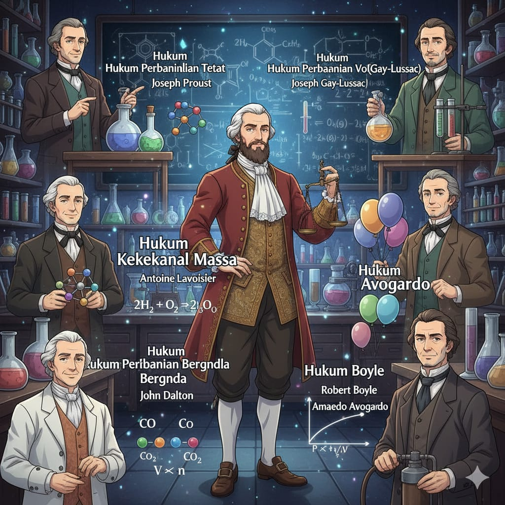

Penemu hukum - hukum kimia.Stoikiometri hanya bisa dilakukan pada persamaan reaksi yang setara, di mana jumlah atom di sisi reaktan sama dengan jumlah atom di sisi produk.
Contoh: Pembentukan Air
2H2 + O2 → 2H2O
Tonton penjelasan mendalam tentang Hukum Dasar Kimia di bawah ini: